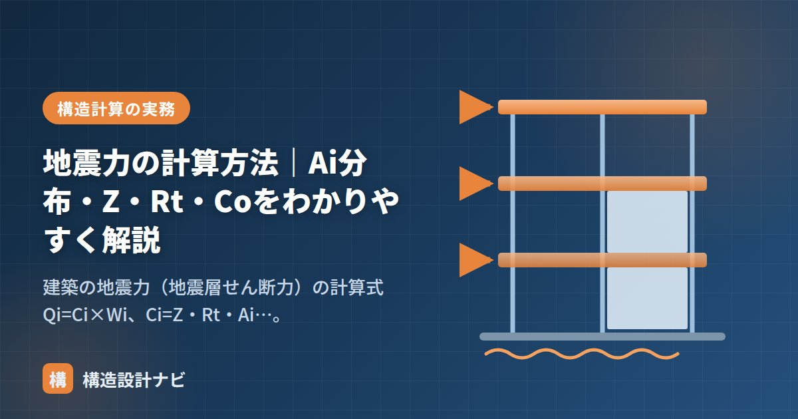

地震力の計算方法｜Ai分布・Z・Rt・Coをわかりやすく解説

建築基準法の地震力は、各階に作用する地震層せん断力 Qiとして計算します。式は一見係数だらけですが、ひとつずつ意味を知れば「建物の重さに、場所・地盤・高さの補正を掛けているだけ」だとわかります。
基本式：Qi = Ci × Wi
地震力は建物の重さに比例します。Wi が「その階が支えている上の重さ全部」である点がポイントで、1階は建物全重量、最上階は屋根まわりだけを支えます。
4つの係数の意味
| 係数 | 名称 | 意味と値の目安 |
|---|---|---|
| Z | 地震地域係数 | 地域ごとの地震の起きやすさ。1.0〜0.7（東京・静岡など1.0、沖縄0.7） |
| Rt | 振動特性係数 | 建物の固有周期と地盤種別による低減。周期が長いほど小さい（≦1.0） |
| Ai | 高さ方向の分布係数 | 上階ほど大きい（1階で1.0、上にいくほど増える） |
| Co | 標準せん断力係数 | 一次設計：0.2以上 ／ 保有水平耐力計算（大地震）：1.0以上 |
なぜ上階ほど地震力が大きいのか（Ai分布）
地震時の建物は、むちをしならせたときのように上にいくほど大きく振られます。この応答の増幅を表すのが Ai 分布です。
図：地震力の高さ方向分布。上階ほど応答が増幅されるため、Aiは上ほど大きい
ただし注意したいのは、Ai が大きいのは「係数」であって、層せん断力 Qi 自体は下の階ほど大きいことです。下の階は支える重量 Wi が大きいためです。1階の Qi が最大になります（ベースシア）。
計算例：ざっくり感覚をつかむ
東京（Z=1.0）の低層RC造（Rt=1.0）、1階が支える重量 W1 = 10,000 kN のとき、一次設計用の1階の層せん断力は：
- 地震力は重量に比例。建物を軽くすることが最大の耐震対策（構造種別の選択にも直結）。
- Rt は周期が長い（高層・軟弱地盤でない）ほど小さくなる＝地震力を低減できる。
- Ai は上ほど大、Qi は下ほど大。混同しやすいので注意。
- 地下部分は層せん断力でなく水平震度 k（≧0.1Z）で計算する。
求めた地震力で部材を検定する流れは「許容応力度計算とは？」、重量 Wi のもとになる荷重は「固定荷重・積載荷重の拾い方」で解説しています。
Ai分布の式はあくまで整形な建物を前提にした簡便法です。中間階だけ剛性が極端に落ちる建物や、屋上に重い設備が乗る建物では、実際の揺れ方が式どおりにならないことがあります。私は概算にはAi分布を使いつつ、質量・剛性が不規則な階があれば必ず個別に層せん断力の偏りを疑うようにしています。
計算例：3階建てで各階の地震力を求める
1階だけでなく、各階の層せん断力を実際に計算してみると、AiとQiの関係がはっきりします。
条件：東京（Z＝1.0）、低層RC造（Rt＝1.0）、一次設計（C0＝0.2）。各階の重量は3階＝1,000kN、2階＝1,200kN、1階＝1,200kN（合計3,400kN）とします。
| 階 | その階が支える重量 Wi | Ai（例） | Ci ＝ Z·Rt·Ai·C0 | Qi ＝ Ci×Wi |
|---|---|---|---|---|
| 3階 | 1,000 kN | 1.42 | 0.284 | 284 kN |
| 2階 | 2,200 kN | 1.16 | 0.232 | 510 kN |
| 1階 | 3,400 kN | 1.00 | 0.200 | 680 kN |
この表から読み取れる重要な点が2つあります。
- Aiは上階ほど大きい（1.00 → 1.16 → 1.42）。上階ほど揺れが増幅されるためです。
- Qiは下階ほど大きい（284 → 510 → 680kN）。支える重量Wiが下階ほど大きく、その影響がAiの増加を上回るためです。
1階のQi（＝680kN）が建物全体に作用する水平力で、これをベースシアと呼びます。この例では建物総重量3,400kNの20%にあたり、C0＝0.2という設定がそのまま反映されていることが確認できます。各係数の詳しい算定方法とAi分布の計算式は「地震力の算定方法とZ・Rt・Ai・C0」で解説しています（Ai分布算出Excelも無料配布中）。
地震力の式が意味していること
式を分解すると、それぞれの係数が「何を補正しているのか」が見えてきます。
| 係数 | 何を表しているか | 設計者が動かせるか |
|---|---|---|
| Wi（重量） | 建物そのものの重さ | 動かせる（構造種別・仕上げの選択） |
| Z（地域） | その土地の地震の起きやすさ | 動かせない（敷地で決まる） |
| Rt（周期・地盤） | 建物と地盤の揺れやすさの相性 | 間接的に影響（構造計画で周期が変わる） |
| Ai（高さ） | 上階ほど揺れが増幅する度合い | 動かせない（重量分布で決まる） |
| C0（地震の強さ） | 想定する地震のレベル | 動かせない（法令で規定） |
この表が示す最も重要な事実は、設計者が能動的に減らせるのは「重量」だけだということです。屋根を軽い材料にする、間仕切りを軽量化する、構造種別を軽いものにする——こうした判断が、そのまま地震力の低減につながります。「地震に強い建物をつくる」といえば強度を上げることを想像しがちですが、軽くすることも同じくらい有効な対策なのです。
よくある質問
Q1. Aiが上階ほど大きいのに、なぜ層せん断力は下階のほうが大きいのですか？
層せん断力Qiは「係数Ci」と「支える重量Wi」の積だからです。上階ではAiが大きくCiも大きくなりますが、支える重量Wiは屋根まわりだけで小さくなります。逆に1階はAi＝1.0と小さいものの、建物全体の重量を支えるためWiが最大になります。この重量の差がAiの増加を上回るため、Qiは下階ほど大きくなります。
Q2. 地震用の重量には何を含めますか？
固定荷重と、地震用に定められた積載荷重を合計します。積載荷重は用途ごとに「床用」「大梁・柱用」「地震用」の3種類が定められており、地震用がもっとも小さい値になります。これは、地震というごく短時間の現象のあいだに、室内の人や物がすべて最大に載っている確率は低いという考え方によります。積雪の多い地域では、地震時に想定する積雪荷重も加算します。
Q3. Rtを求めるための固有周期はどう計算しますか？
略算式として T＝h×(0.02＋0.01α) を用います。hは建物の高さ（m）、αは鉄骨造部分の高さの割合で、RC造・SRC造ならα＝0、S造ならα＝1です。つまりRC造ならT＝0.02h、S造ならT＝0.03hとなります。高さ20mのRC造なら T＝0.4秒です。この周期と地盤種別ごとのTc（第1種0.4秒、第2種0.6秒、第3種0.8秒）を比較してRtを決めます。
まとめ
- 地震層せん断力は Qi = Ci × Wi、Ci = Z・Rt・Ai・Co。
- Z＝地域、Rt＝周期と地盤、Ai＝高さ方向の増幅、Co＝0.2（中地震）/1.0（大地震）。
- 地震力は建物重量に比例し、層せん断力は1階で最大になる。